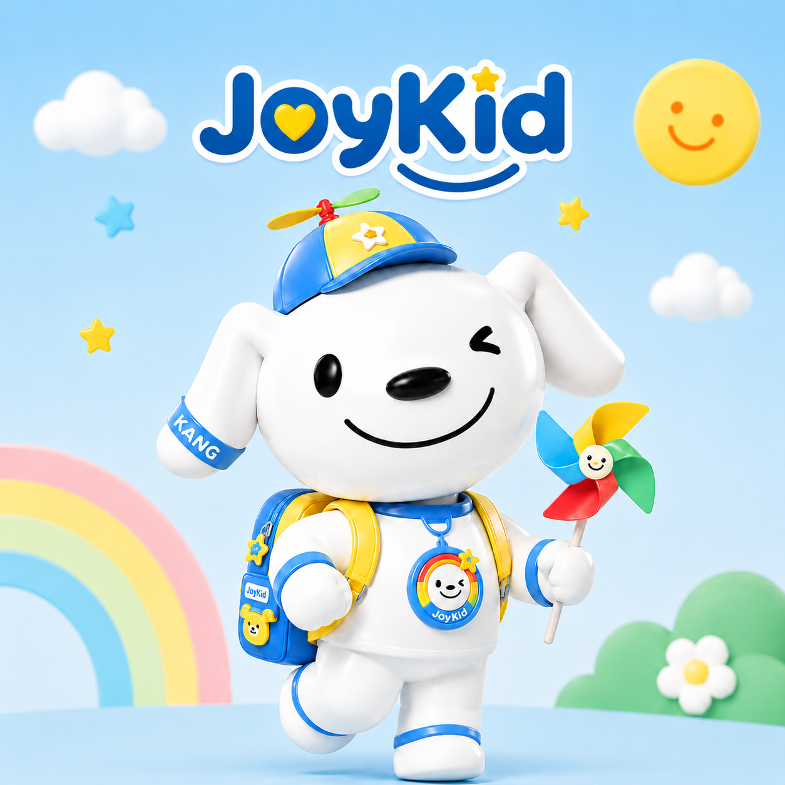
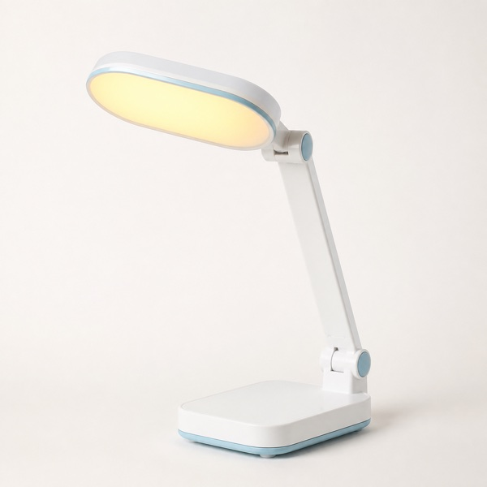
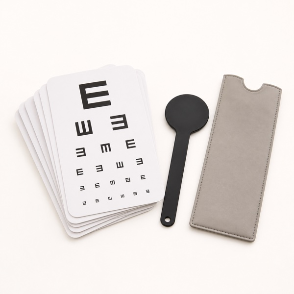
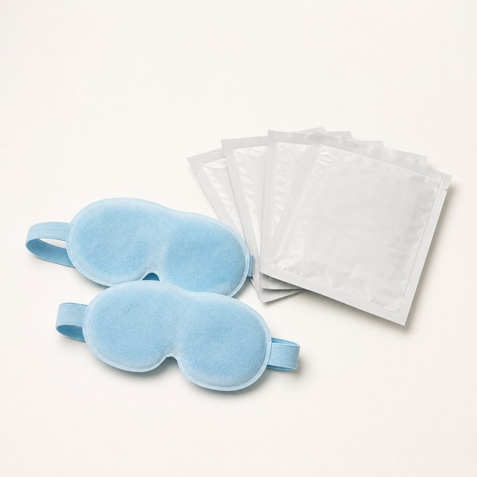
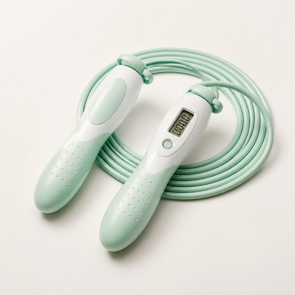
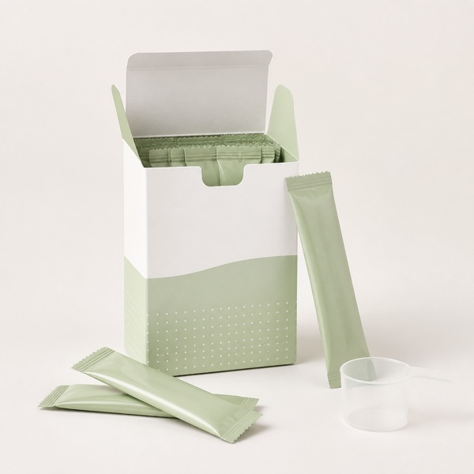
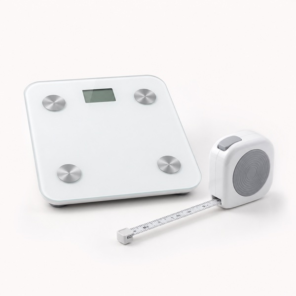
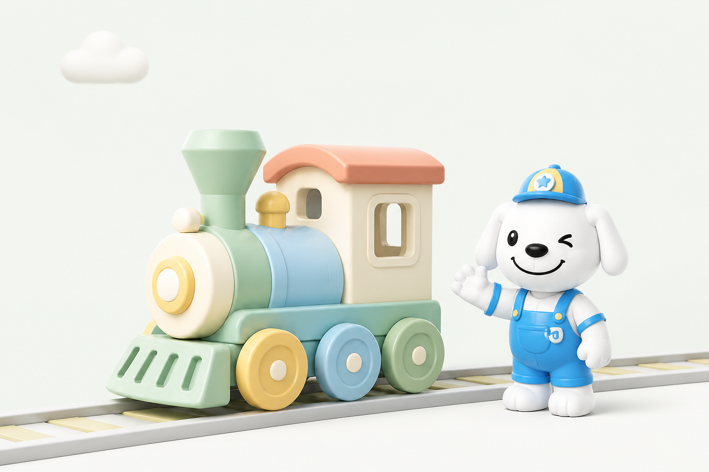

Joykid
今日重点
早上好，卓卓妈妈
今天有1件事需要关注
学校筛查结果已更新
视力与屈光筛查有1项异常
北京儿童医院 · 2026.08.06 医生已签名8月16日需复诊
健康资料
添加检查报告
同步报告，便于整理变化与复诊准备
自动归档便于复诊
今日计划
0/5
今日计划
最近成长
15天动态画像
›
用药、户外和互动训练已形成连续记录
历史打卡计划计划执行记录
连续记录
15 天
最近一周重点任务完成稳定，复诊前继续保持记录。
近 7 天记录
按天查看今日计划进行中
今天已完成 0/5 · 待记录用药、户外和表达练习
复诊前综合支持
良好完成 4/5 · 用药、户外、远眺、情绪表达已完成
复诊前综合支持
完成完成 5/5 · 连续用药记录完整
复诊前综合支持
需补强完成 3/5 · 户外活动不足，已生成次日提醒
复诊前综合支持
良好完成 4/5 · 社交表达练习已记录
病历夹Medical Records
宝宝医疗档案
3份文档
卓卓的病历夹
医院、体检和检查数据已按时间归档
医疗资料
添加检查报告
拍照或上传原始报告，统一归档整理
支持图片与 PDF原件留存
就诊病历
病历眼科就诊病历
›
北京儿童医院 · 2026.08.06
健康报告
体检报告儿童健康体检报告
›
北京儿童医院 · 已整理
检查检验报告屈光与眼轴检查报告
›
北京儿童医院眼科 · 已整理
医疗数据安全存储
原始文档加密归档，辅助解读不会修改医院原始结论。
就诊病历
医院电子病历医生已签名
眼科就诊病历
北京儿童医院 · 儿童眼科·2026年8月6日
就诊人卓卓主诊医生张医生
诊医院诊断
已确诊双眼近视
诊断信息来自医院病历原文，Joykid 不修改诊断结论。
验原始检查数据
医院原始值散瞳验光结果
睫状肌麻痹验光（散瞳）电脑验光 + 检影复核睫状肌麻痹充分
眼别球镜 S柱镜 C轴位 AXSE
SE = 球镜 S + 1/2 × 柱镜 C；页面保留医院原始字段，未进行二次修改。
Rx电子处方
处方药本次用药
低浓度阿托品滴眼液
1 瓶具体浓度、滴数和使用眼别以处方原文为准
用药余量提醒预计可使用 7 天按当前记录估算，以实际用量为准
处方购药
药师审核
优先保障本次用药
处方审核通过后，由京东健康药房履约配送
Rx
低浓度阿托品滴眼液
¥58
处方药 · 1瓶 · 按处方使用
预计明日送达可选加购
不影响处方购药90天近视管理权益包
把医生服务与家庭护眼工具一起配齐，适合需要持续管理的家庭。
灯儿童护眼台灯医2次在线问诊号线下眼科号源券JD商城优惠券
处方药品¥58
近视管理权益包¥299
合计¥58
处方药须经药师审核后发货；如审核未通过，药品金额将原路退回。权益包为可选服务，不影响处方审核与购药；页面价格为演示数据，以实际结算页为准。
医医生建议
按时用药并定期复查
儿童体检报告
医院体检
医生已审核
卓卓的儿童健康体检报告
北京儿童医院 · 2026年8月5日
16指标正常
2需要关注
12可连续对比
解
报告解读
本次重点关注视力变化
生长发育整体稳定，右眼远视储备与眼轴变化需要持续观察。建议结合户外行为记录，并按医生建议完成复查。
仅辅助解读，诊疗结论以医生意见为准关键指标
本次体检重点关注
2 项医
医生建议张医生 · 儿童眼科
建议 3 个月内复查裸眼视力、屈光度与眼轴长度；每日保证 2 小时户外活动，连续近距离用眼不超过 30-40 分钟。
原始报告由北京儿童医院签发，已加密同步至 Joykid
本周目标
稳定执行医生方案并完成家庭训练
3/5
王医生已审核 · 今天10:20每日医疗计划
阿托品用药提醒
今晚21:00 · 按电子处方使用
用药余量
预计可使用7天
生活方式
户外找色游戏
今日 0/20分钟
专业支持
视觉放松互动训练小火车追踪互动
约3分钟 · 跟随目标进行远近切换
下一步
眼科复查
8月16日 · 待预约
处方由医生开具 · 不自动生成处方复诊前长期管理计划
把用药记录、户外习惯、互动训练和复诊续方放在同一个履约节奏里。
阶段进度
第15天 · 复诊准备完成建档
医院病历与处方已同步
连续执行
用药、户外、训练形成记录
复诊续方
预计7天后用完，准备线上复诊
更新方案
复查后调整下一阶段计划
保留用药时间和不适反馈，复诊时给医生参考。
每天拆成可完成的小任务，不让家长额外记很多表。
记录主动选择、等待和视觉提示后的完成情况。
近视 · 近视防控管理
较上月 ↑6分｜重点提升户外时长与用眼节奏
需关注
本月状态
14天专项改善计划
近视防控强化方案
07.28-08.10｜第 1 阶段
执行建议
- 保持每日户外活动 2 小时，优先安排在放学后自然光环境
- 连续近距离用眼不超过 30-40 分钟，配合 20-20-20 游戏
- 保证正确读写姿势，夜间阅读打开护眼台灯
- 本月完成一次视力与眼轴复测，结果同步到月报
今日执行计划
完成 1/4放学后户外 40 分钟
自然光运动，减少近视进展风险
护眼运动视频
跟练 15 分钟，完成远眺和追光
读写姿势检查
灯光、距离、坐姿三项确认
20-20-20 闯关
每 30 分钟远眺 20 秒
生长 · 生长发育管理
身高趋势良好｜优先提升运动和饮食执行
良好
本月状态身体指标趋势
近 6 个月
21天专项改善计划
生长发育支持方案
07.28-08.17｜运动 + 饮食第 1 阶段
执行建议
- 保证 9-11 小时睡眠，固定 21:30 前进入睡前流程
- 每天 60 分钟中高强度运动，优先跳跃、跑跳和球类
- 早餐增加优质蛋白，晚餐补足蔬菜和钙来源
- 每月固定日期记录身高体重，观察趋势而非单点数值
今日执行计划
完成 0/4蛋白早餐挑战
牛奶 + 鸡蛋/豆制品，补足早餐蛋白
跳跃训练 10 分钟
跟 Joykid 完成长高跳跳操
睡前拉伸 8 分钟
放松身体，帮助进入睡眠流程
本周身高记录
固定时间测量并同步档案
复诊预约医院号源 · 预约确认
建议复诊日期
待预约8月16日
北京儿童医院 · 儿童眼科
诊复诊目的评估近视控制效果及是否续方
选择日期
优先医生建议日选择门诊
按复诊需求推荐选择时段
8月16日就诊人卓卓儿童本人
已选择8月16日 周日 09:30
北京儿童医院 · 儿童眼科近视防控门诊
实际号源和就诊费用以医院预约结果为准；若出现视力骤降、明显眼痛等急性情况，请勿等待预约日期。
在线问诊续方医生接诊 · 处方评估
药量预计剩余 2 天
Rx发起在线续方问诊
先提交用药情况，由儿童眼科医生判断是否符合续方条件。
药
原处方药品
处方药低浓度阿托品滴眼液
浓度、滴数和使用眼别以原电子处方为准，续方医生可能根据复诊情况调整方案。
续方问诊资料
约 2 分钟已自动附带
可供医生查看双眼近视诊断
已同步SE 右-3.13D / 左-3.50D
已同步近 7 天家庭记录
已同步眼
接诊科室
权益包内儿童眼科在线门诊
预计 15 分钟内接诊 · 图文问诊
若出现明显眼痛、视力骤降、持续头痛或其他急性不适，应及时线下就医，不建议仅通过在线续方处理。
续方详情15天执行记录 · 医生开方
处方药量不足
15天
预计仅剩 2 天
已连续记录15天，建议今天完成在线医生问诊，避免用药中断。
当前疗程执行 15/15依从性良好
15天用药记录
家长记录 · 可供医生查看续方资料预检
资料已就绪原电子处方
已同步北京儿童医院 · 2026年7月27日
医院诊断与散瞳验光
已同步双眼近视 · 原始检查字段完整
连续15天用药记录
已同步14次按时 · 1次补记 · 无明显不适
医生续方评估
待完成处方药必须由医生问诊后决定是否续方
Joykid仅协助整理病历与执行记录，不自动开方。是否续方、药品浓度和用法用量由接诊医生独立判断。
在线医生问诊张医生已接诊
北京儿童医院 · 儿童眼科
实名医生张医生
副主任医师 · 在线续方门诊
今天 14:26
续方资料摘要
15/15 用药记录
14次 按时使用
0次 明显不适
确认续方订单电子处方 · 药师审核 · 京东配送
✓电子处方已签发
72小时内有效续方处方可购买
张医生 · 儿童眼科 · 2026年8月10日
处方药品
需药师审核后发货Rx
低浓度阿托品滴眼液
¥581瓶 · 具体浓度、滴数及使用眼别以新处方为准
预计明日送达配送信息
药品冷链以实际要求为准费用明细
在线问诊已使用权益- 处方药品
- ¥58
- 在线续方问诊
- 权益抵扣 ¥0
- 配送费
- ¥0
- 应付金额
- ¥58
合计¥58
处方药仅供本次处方指定患者使用，请勿转赠或自行调整用法用量。
长期计划多维成长支持 · 医生意见优先
长期管理计划
10天
10 天综合成长支持
把视力管理、社交沟通调节和家庭行为记录放到同一个周期里。
今天 · 第 1 天8月16日复诊
完成医疗执行，也照顾社交沟通与情绪调节
按医嘱用药并记录反馈
保持户外和近距离用眼节奏
每天完成一个轻量社交沟通练习
医疗执行
每日用药计划与记录
下次提醒今晚 21:00
低浓度阿托品滴眼液 · 以电子处方为准
生活方式
0/3今天完成 3 个小任务
户外找色游戏
自然光户外 20 分钟
近距离用眼休息
每 30-40 分钟远眺放松
读写环境检查
光线、距离、坐姿三项确认
专业支持
辅助视觉放松互动训练
▶
小火车追踪互动
约 3 分钟 · 跟随目标进行远近切换
用于互动与放松，不替代发育行为专科评估或眼科治疗下一步
剩 9 天8月16日眼科复诊
复诊时由医生结合散瞳验光、眼轴和用药记录评估控制效果，并决定是否续方。
本计划用于提醒、记录和服务衔接，不调整处方。出现明显眼痛、视力骤降或其他急性不适时，应及时线下就医。
用药计划与记录处方执行 · 家长记录
21:00
低浓度阿托品滴眼液
具体浓度、滴数和使用眼别以电子处方原文为准根据家长药量记录估算
本周期 1/10
近30天用药记录
已记录 23 天 · 漏记 2 天记录以用药时间为准，每天 06:00 更新
用药后记录
家长填写记录用于复诊参考，不用于自行调整剂量。
药品预计还可使用 2 天
建议发起在线续方问诊
由医生结合原处方和近期记录判断是否续方。请勿自行加量、减量或重复补滴。
复诊与续方医生评估 · 服务衔接
下一次复诊
剩余9天8月16日
北京儿童医院 · 儿童眼科
复诊流程
系统持续提醒病历与处方已同步
8月6日 · 已完成
复诊前连续记录
用药、户外与不适反馈
预约眼科复诊
建议提前完成挂号
医生评估是否续方
根据检查和执行记录决定
复诊资料清单
2/4 已备续方说明
平台不会自动续方
复诊后由医生判断是否继续使用、调整或停止。新处方确认后，Joykid再同步提醒与药品履约。
14天专项改善计划
近视防控强化方案
07.28-08.10｜第 1 阶段

方案目标
82分- 保持每日户外活动 2 小时，优先安排在放学后自然光环境
- 连续近距离用眼不超过 30-40 分钟，配合 20-20-20 游戏
每日执行计划
完成 1/4
方案咨询
咨询 Joykid 与医生
对方案目标、执行动作或复查时间有疑问，可先问一问，必要时转医生复核。
有什么健康问题，先问一问
基于卓卓的“五小”画像，解释风险、推荐服务包和下一步计划。
您可以这样问
JOY FOR GROWTH
权益商城
当前管理宝宝卓卓
近视管理
根据近视管理计划，为你优先匹配专业服务与护眼商品
卓卓专属 · 90天有效
近视管理权益包
把实物护眼工具和线上、线下专业资源一次配齐

护眼台灯
在线问诊 2 次
线下眼科号源
¥50 专属券
专项价¥299¥399
查看权益专业服务
先问 Joykid
梳理宝宝情况，需要时再连接医生或线下号源。
按管理场景精选
京东履约
适合宝宝的健康好物
近视管理精选
环境改善 / 家庭记录计划同款
儿童护眼台灯读写照明 · 亮度自适应
¥199 起

家庭记录月度复测 · 数据归档
¥29 起

舒缓用品睡前放松 · 一次性耗材
¥39 起
生长管理精选
运动习惯 / 家庭测量
运动计划运动记录 · 计划打卡
¥49 起

营养补充适用前建议完成营养评估
¥129 起

趋势记录定期测量 · 档案同步
¥89 起
确认订单权益与履约信息
京东配送
为 卓卓 推荐
90天近视管理权益包
实物工具、医生服务与持续管理一次配齐
近视管理90天有效
本单权益
购买后自动到账4 项权益，按需使用
儿童护眼台灯
京东配送读写照明 · 实物 1 台
儿童眼科在线问诊
90天有效图文/语音问诊 · 共 2 次
线下儿童眼科号源福利
按开放号源合作机构预约协助 · 共 1 次
JD商城专属优惠券
¥50券包儿童健康指定商品可用
配送信息
用于寄送护眼台灯服务对象
权益绑定后不可转赠卓卓
7岁3个月 · 当前近视管理计划
当前宝宝费用明细
一次付费 · 90天有效- 权益包价格
- ¥399
- 专项优惠
- -¥100
- 配送费
- ¥0
- 应付金额
- ¥299
护眼台灯属于健康商品，不替代近视诊疗或复查；线上问诊由医生独立判断，线下眼科预约时间与机构以实际开放号源为准。
合计¥299已优惠 ¥100
当前管理宝宝
卓卓
7 岁 3 个月｜男孩
儿童成长概览
›
五维成长画像
生长、视力、心理与习惯状态一览
我的订单
成长概览
孩子健康状态
Health Overview
五维状态
五维状态图
JoyKid成长总结
结合病历与家庭记录，仅供成长管理参考
骨龄与生长速度处于良好区间。若将平均入睡时间提前 25 分钟，并保持户外运动，有助于维持稳定的生长节奏。
记录
按时间查看
最近变化
数据
已同步 92%
数据来源
医院专业数据诊疗、检查检验、儿保记录
已同步家庭行为数据饮食、睡眠、运动、屏幕时间
今日更新家庭建议根据记录整理提醒和下一步建议
持续更新
孩子健康档案
卓卓
7 岁 3 个月｜男孩｜档案完整度 92%
基础健康摘要
详细画像见成长画像小眼镜82分中风险
小胖墩75分稳定
小豆芽91分良好
小蛀牙95分良好
小焦虑88分良好
档案数据来源
已授权档案补充建议
- 保持每日户外活动 2 小时，优先安排在放学后自然光环境
- 本月完成一次视力与眼轴复测，结果同步到月报
卓卓的2年成长报告
成长报告
持续管理 24个月
卓卓正在更主动地参与自己的生活
主动表达选择
最近变化多数情况下主动提示后完成需多次提示
记录
按时间查看
最近变化
下一阶段
已完成阶段记录
计划已更新让每一次专业干预，都不在离开医院后中断

卓卓，选择一张车票
本次互动不保存原始视频
本次互动记录已同步健康档案
完成一次小火车任务
3分20秒 · 完成2个任务
✓ 已同步健康档案本次最重要的发现
使用视觉提示后，卓卓完成了主动选择
专业人员参考
下次继续使用单步骤任务
本次记录不作为临床诊断